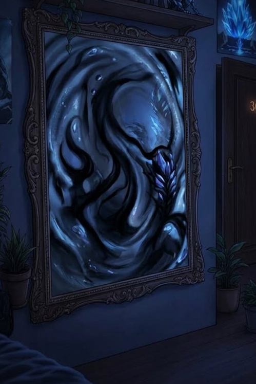

2/3
Camino actual: La Puerta Imposible
🔊 Narración:
Al revisar la foto, nota que su armario fue reemplazado por la puerta 307. Su teléfono suena; una voz idéntica a la suya le advierte aterrada que la entidad se alimenta del pánico.
Al levantar la vista, la anomalía se materializa en su sala, y el gran espejo de la pared comienza a deformarse reflejando sombras.
♦ ───── ♦